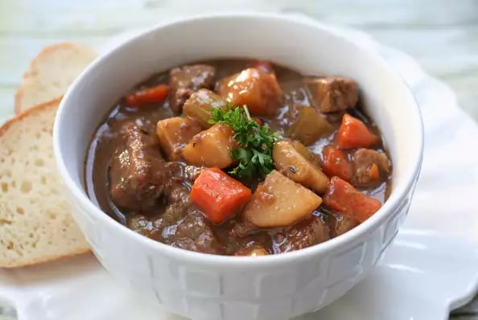

Beef Stew

Description
This hearty stew is great served over egg noodles
Ingredients
- 1 cup flour
- 1 teaspoon garlic powder
- 1 teaspoon salt
- 1 teaspoon ground black pepper
- 3 pounds cubed beef stew meat
- ¼ cup vegetable oil
- 1 onion, minced
- 4 cups beef broth
- 1 teaspoon dried rosemary
- 1 teaspoon dried thyme
- 2 bay leaves
- salt and ground black pepper to taste
- 3 large potatoes, peeled and cubed
- 4 carrots, peeled and chopped
- 4 stalks celery, chopped
- 2 teaspoons cornstarch
- 2 teaspoons cold water
- 1 cup frozen peas
Steps
- Combine the flour, garlic powder, 1 teaspoon salt, and 1 teaspoon pepper in a resealable plastic bag. Place the beef in the bag and shake to coat.
- Heat the oil in a large stockpot over medium heat; brown the beef in the hot oil and remove to a plate lined with paper towels. Add the onion to the remaining oil and cook until browned. Pour the beef broth into the stockpot. Stir in the rosemary, thyme, and bay leaves. Season with salt and pepper. Return the beef to the pot. Bring the mixture to a boil; reduce heat to low, cover, and simmer 1 hour.
- Add the potatoes, carrots, and celery to the pot. Whisk together the cornstarch and cold water in a small bowl and mix into the stew. Cover and simmer 45 minutes more. Stir in the frozen peas and cook another 15 minutes.